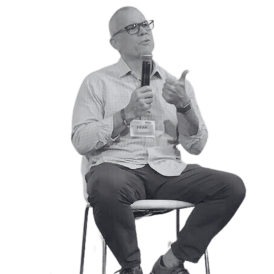

Sunrise or Sunset
Corporate is ending for every Gen Xer. You can treat that as the wind-down you were told to expect, or as the beginning of the part you actually choose. Both are valid. Only one is a decision.
Speaker · Coach · Founder, The Time Rich Project
I spent 25 years in corporate before they made the decision for me. What I decided was that I was not going back. Now I help Gen Xers transition out of corporate and build the lives they want, and have earned.

As featured in


“Top career coach warns Gen X…” Fortune
Speaking
Gen X is the first generation to hit the end of a corporate career without a pension, with decades of life still ahead, and with no playbook for what comes next. I talk about what that actually means and what to do about it. Direct, practical, and built for people who have heard enough motivational speeches.
Corporate is ending for every Gen Xer. You can treat that as the wind-down you were told to expect, or as the beginning of the part you actually choose. Both are valid. Only one is a decision.
Why a salary is the most concentrated risk most people will ever take, what the new market for experienced talent actually looks like, and how to fund a life without handing your time back to a single employer.
Thirty years inside a system teaches you rules that stop working the day you leave. Over-analysis, waiting for permission, staying in your lane. What has to go, and what replaces it.
Available for keynotes, corporate and association events, workshops, and podcasts. Talks are adapted to the room, whether that is people still inside, people recently let go, or leaders trying to support both.
Check availability1:1 Coaching
This is not a course or a canned program. It is built around your situation, where you are right now, what you actually want, and what is in the way. We work the three moves together: design the life, fund it, and build the structure to live it.
One session a month. Plenty of room to work between calls.
Two sessions a month at a slightly better rate. More momentum if you want it.
I am opening up a few slots right now. Either option works, twice a month is simply more convenient if you want to move faster, at a slightly better rate. If it is not a fit, I will tell you and point you somewhere better. Start with a conversation, no pitch.
About
I spent more than 25 years in corporate go-to-market roles. Good jobs, work I mostly liked, paid well. On paper nothing was wrong. But something was off and I could not name it.
Then they made the decision for me. I got kicked out. What I decided was that I was not going back.
Getting out did not fix it. I thought the hard part would be replacing my income. It was not. I owned all of my time and had no idea what to do with it, and the loneliest stretch of my life came after the paycheck problem was already solved.
I figured it out slowly, alone, and made most of the mistakes available. Then I started a community, and that changed everything. Not because I finally had answers. Because I found people asking the same questions.
Everyone is smart enough to figure this out on their own. I did. It just took me years, I did it alone, and it did not have to be that hard.
Today I host The Time Rich Project Podcast, write a weekly newsletter, and run The Time Rich Collective, a community of Gen Xers making this transition together. The mission is to help one million Gen Xers take back control of their time and build the lives they want, on their own terms.
The Time Rich Project
A podcast, a newsletter, and a community, all built around the same idea. Take back your time, then decide where it goes.
Your circle of five, monthly working sessions, and the full program. Gen Xers making the same transition, together.
Join →Real people living on the other side of corporate. I ask all of them if they would go back. Not one has said yes.
Listen →What corporate taught you that you now have to unlearn, and what actually works on the other side.
Subscribe →Speaking inquiry, coaching, or just a question about where you are in this. I read everything.
BT@BrettTrainor.com